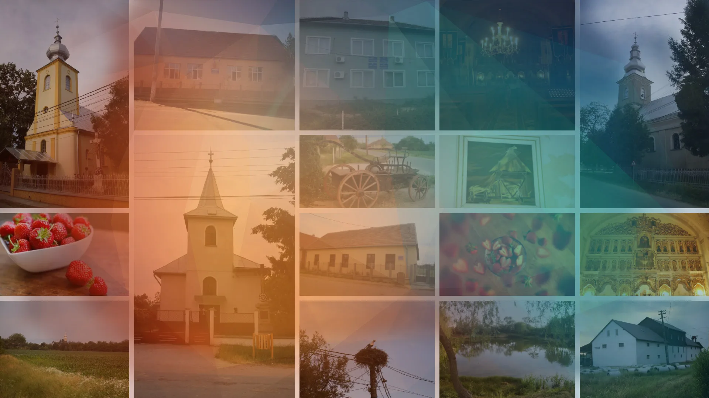
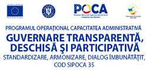

Informații oficiale pentru cetățeni
Servicii publice clare și informații la îndemâna comunității.
Portal modern pentru anunțuri, hotărâri, formulare și serviciile Primăriei Comunei Porumbești.
Acces rapid
Vezi toate →Servicii frecvente
Cele mai căutate informații ale administrației locale.
Monitorul Oficial Local
Hotărâri, dispoziții și documente publice.
Formulare tipizate
Cereri și formulare administrative utile.
Telefoane utile
Acces rapid la serviciile publice locale.
Legislație
Acte normative și informații administrative.
Anunțuri
Comunicări actuale pentru locuitori.
Portal online
Acces la portalul de servicii.
Consiliul Local
Componență și hotărâri.
Galeria foto
Imagini din viața comunității.
Comuna
Istorie, comunitate și identitate locală
Descoperiți istoria comunei, reperele locale și activitatea Asociației Sportive Ugocea Porumbești.

Transparență administrativă
Guvernare transparentă, deschisă și participativă
Acces clar la documente, decizii și informații publice pentru o administrație responsabilă.
